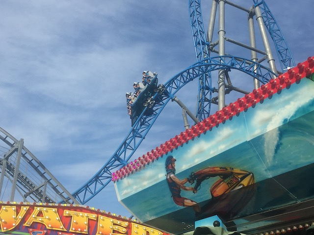

| |
Gale Force Review

We're here at Playland's Castaway Cove. Today's ride we'll be reviewing for you is Gale Force, which is currently the only S&S Launched El Loco. The regular El Locos are fun. But the launched ones are something else entirely. Cause riding this, you don't think of it as just an El Loco with a launch. This is....a really cool and weird little ride. It's honestly pretty remarkable in.....just how different this ride feels from nearly all other coasters. Seriously. There aren't many coasters like it. I know I compare the ride to Tranan. But only because they're both S&S coasters that were the only ones of their kind, never got built again, are very fun, and unique coasters. Oh, and they're both blue (but that's just a dumb trivia fact. Not a real substantive fact that means anything about either ride). But aside from that, they're COMPLETELY DIFFERENT!!! Yeah. There's really nothing else like it. So yeah. Let's hop in the cars, pull down the OTSRs, the gates open (I know B&M Floorless coasters have gates. But these gates are....something else. These damn near feel like doors) and we're off! We launch up, only to roll back through the station, get a boost of speed, and head up the back end. We rise up there, almost reaching the top of....the twisted mess. You know, this does seem like one of those Premier Sky Rockets. Except this is more unique and definately a better ride. We fall back down, get another BOOST from the LIMs, and we now have enough speed to reach the top of....the top hat. Yeah. One thing to note about this ride. It is in an EXTREMELY tight space. So....this thing provides not only LATERALS, but also AIRTIME!!! IT also provides.....this really strange feeling. This may sound weird, but it feels like you go upsidedown on this part of the ride. No really. This top hat genuinely feels like an inversion. If you put this ride in a dark box, and I knew nothing about the layout, I would SWEAR that this ride goes upsidedown. And I can't think of any other coaster to do that. So....credit to Gale Force for that. We then drop back down, gaining all that speed. Rise straight up into a Non-Inverting Half Loop. Except...again. It REALLY doesn't feel like it. It GENUINELY feels like an Immelmann. I think because it gets so close to going upsidedown, but then it just changes course at the last second to keep you rightside up. That gives us a really nice lateral ejector air combo that is really fast, and really fun. =) We then drop down and....do it again. Go back into a Non-Inverting Half Loop. And....I know it doesn't go upsidedown, but.....GOD DAMN IT!! IT REALLY FEELS LIKE IT!! We then rise up another hill, go down into a sharp dive drop back down into the station. DAMN!!! Rush back into the station, and....REPEAT!!! Yep. Just like on Kiddy Coasters, they give you a second lap and send you again on this ride too. Except this one is SO MUCH BETTER!!! After the second round, we slow down, rise up again, and fall back into the station. So....yeah. This is a really interesting and unique ride. If you're at Playland's Castaway Cove, I KNOW you're riding this. But....this isn't a credit whoring coaster. I GENUINELY recommend this coaster. I honestly would call it the best coaster in New Jersey not at Six Flags Great Adventure. So yeah. Get to Playland's Castaway Cove and get on this ride.
7/10
Location: Playland's Castaway Cove
Opened: 2017
Built by: S&S Power
Last Ridden: June 18, 2021
Gale Force Photos



Home
|